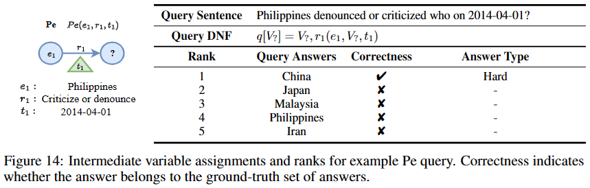
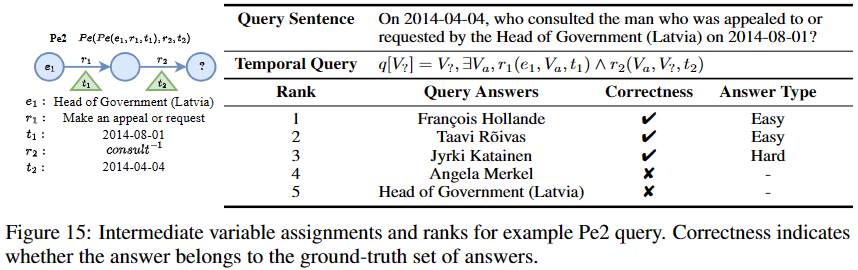
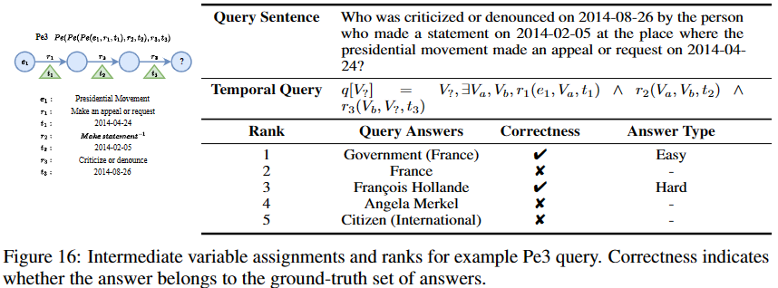
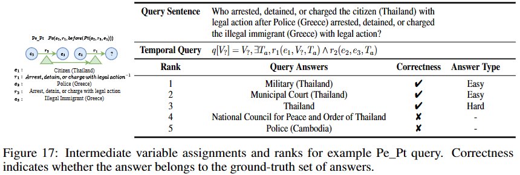
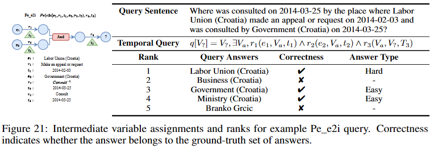
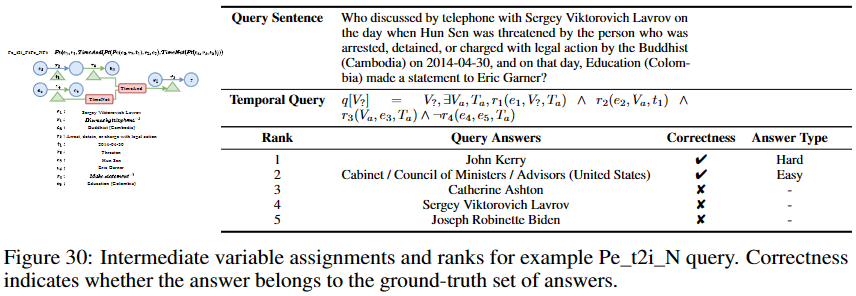
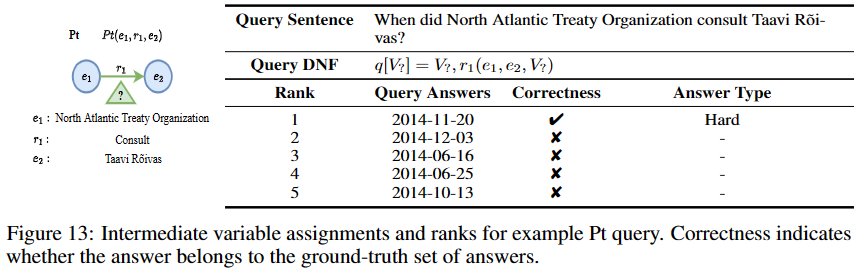
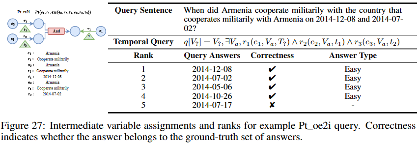
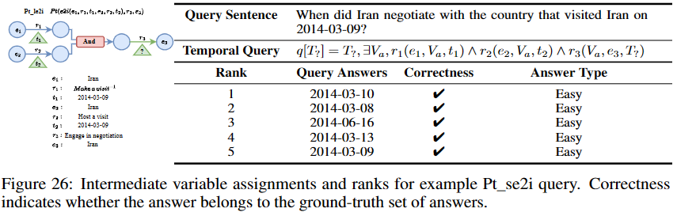
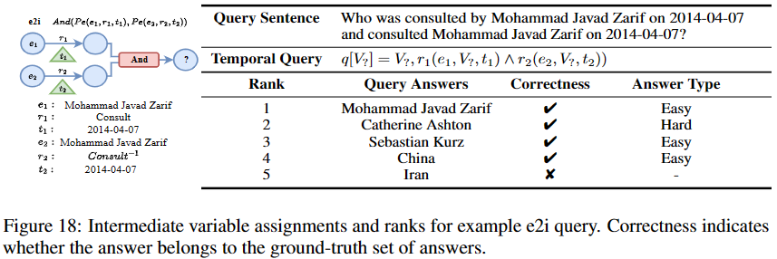
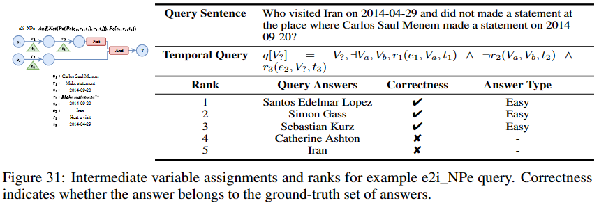
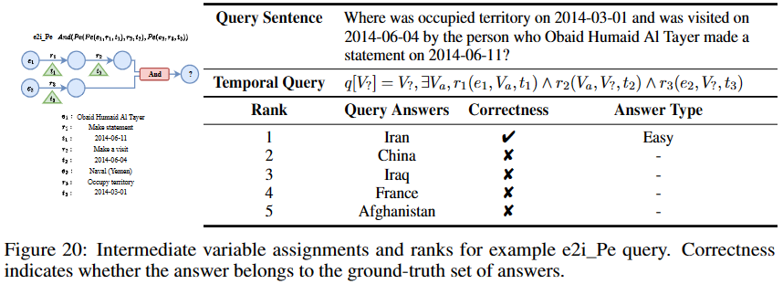
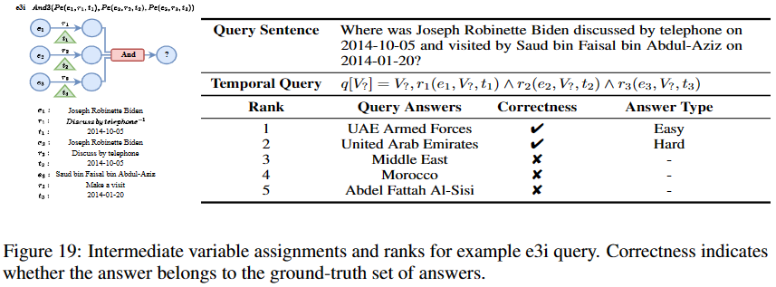
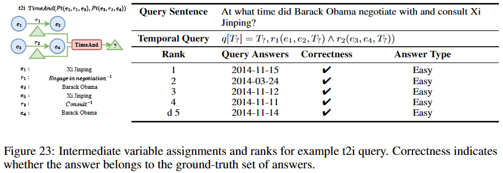
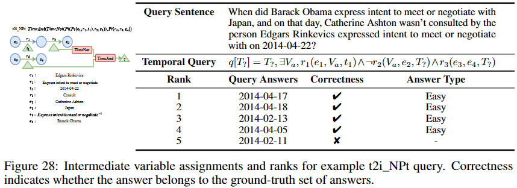
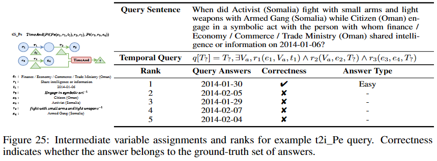
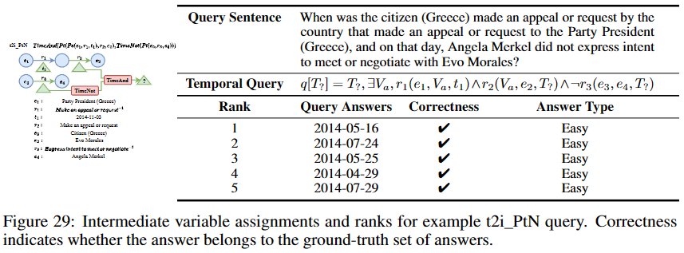
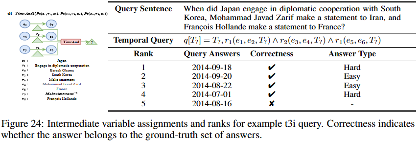
The explanation of answers given by TFLEX
Multi-hop logical reasoning over knowledge graph plays a fundamental role in many artificial intelligence tasks. Recent complex query embedding methods for reasoning focus on static KGs, while temporal knowledge graphs have not been fully explored. Reasoning over TKGs has two challenges: 1. The query should answer entities or timestamps; 2. The operators should consider both set logic on entity set and temporal logic on timestamp set. To bridge this gap, we introduce the multi-hop logical reasoning problem on TKGs and then propose the first temporal complex query embedding named Temporal Feature-Logic Embedding framework (TFLEX) to answer the temporal complex queries. Specifically, we utilize fuzzy logic to compute the logic part of the Temporal Feature-Logic embedding, thus naturally modeling all first-order logic operations on the entity set. In addition, we further extend fuzzy logic on timestamp set to cope with three extra temporal operators (After, Before and Between). Experiments on numerous query patterns demonstrate the effectiveness of our method.
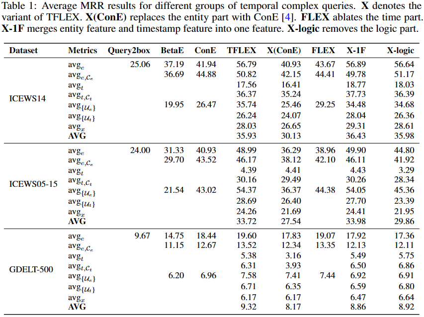
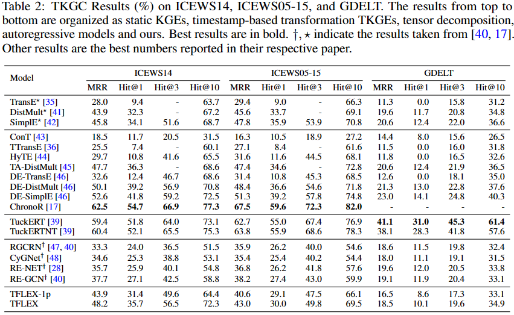
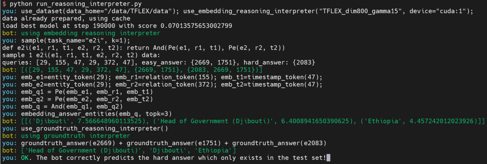
In implementation, we define the basic functions and query structures as functions in python, which are named Complex Query Function (CQF). There are lots of advantages of using python functions to define query structures. Firstly, the functions are easy to understand and debug. Secondly, the functions are easy to be reused in the dataset-sampling process and model-training process. Thirdly, the functions are easy to be extended to support more complex query structures and reimplement the existing query embedding methods.
We use the python interpreter to parse the function to Abstract Syntax Tree (AST), which is a more friendly readable subset of computation graph. In this way, executing the computation graph is equivalent to executing the CQF in python interpreter. Since we have the god privileged access to the AST, we can modify the interpreter to support various dynamic reasoning processes
In the screenshot, we randomly select an example of e2i query. Then, we use the embedding reasoning interpreter to get the final answer set step by step. The final answer set is shown in the ranking list, where each answer is followed by its similarity score to the query. Finally, the bot correctly predicts the hard answer which only exists in the test set!
In this work, we firstly define a temporal multi-hop logical reasoning task on temporal knowledge graphs. Then we generate three new TKG datasets and propose the Temporal Feature-Logic embedding framework, TFLEX, to handle temporal complex queries in datasets. Fuzzy logic is used to guide all FOL transformations on the logic part of embeddings. We also further extended fuzzy logic to implement extra temporal operators (Before, After and Between). To the best of our knowledge, TFLEX is the first framework to support multi-hop complex reasoning on temporal knowledge graphs. Experiments on benchmark datasets demonstrate the efficacy of the proposed framework in handling different operations in complex queries
Multi-hop reasoning makes the information stored in TKGs more valuable. With the help of multi-hop reasoning, we can digest more hidden and implicit information in TKGs. It will broaden and deepen KG applications in various fields, such as question answering, recommend systems, and information retrieval. It may also bring about risks exposing unexpected personal information on public data.
Finance temporal knowledge graph is a good example to illustrate the broader impact of multi-hop reasoning. In the financial field, the information stored in TKGs is very sensitive. The one-hop reasoning can complete the hidden financial transaction, while the multi-hop reasoning can help to detect the fraud. The After operator could also be used to predict the future financial transaction. People may take the advantages of logical reasoning to digest financial factor to obtain excess returns.
Military temporal knowledge graph is another example. With the help of multi-hop logical reasoning, we may predict the future military strategy of a country. Besides, with the fuzzy completion of the hidden military information, we can also detect the hidden militarily moves, which may save thousands of soldiers' lives.
The last example is social temporal knowledge graph. The behaviors of people are left and stored in TKGs. With the help of logical reasoning, we may predict a short future of a person. For example, the query may answer the evolution of user profiles: how long may a person transfer to another role, from student to worker, becoming a parent, or being a grandparent. Tracking the user's identity change can provide super benefits for merchants' advertising. Detecting the role of a person is also helpful to provide more personalized services.
However, we should agree that the multi-hop reasoning is still at an extremely early stage, though it may bring about risks. Therefore, we should pay more attention to the security of TKGs and the privacy of users at the mean time when we explore the technology of multi-hop reasoning over TKGs.
@inproceedings{lin2023tflex,
author = {Xueyuan Lin and Haihong E and Chengjin Xu and Gengxian Zhou and Haoran Luo and Tianyi Hu and Fenglong Su and Ningyuan Li and Mingzhi Sun},
booktitle = {Thirty-seventh Conference on Neural Information Processing Systems},
title = {TFLEX: Temporal Feature-Logic Embedding Framework for Complex Reasoning over Temporal Knowledge Graph},
url = {https://openreview.net/forum?id=oaGdsgB18L},
year = {2023}
}